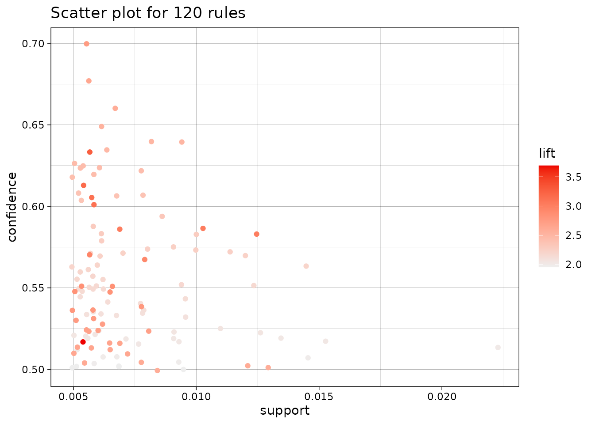
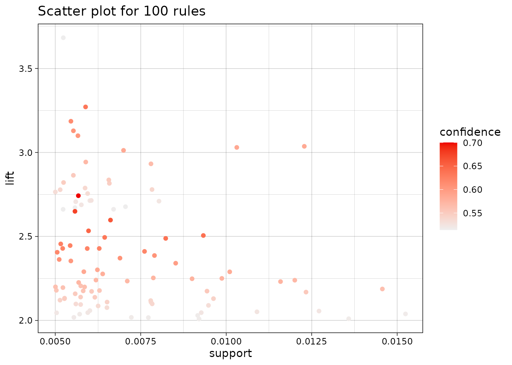
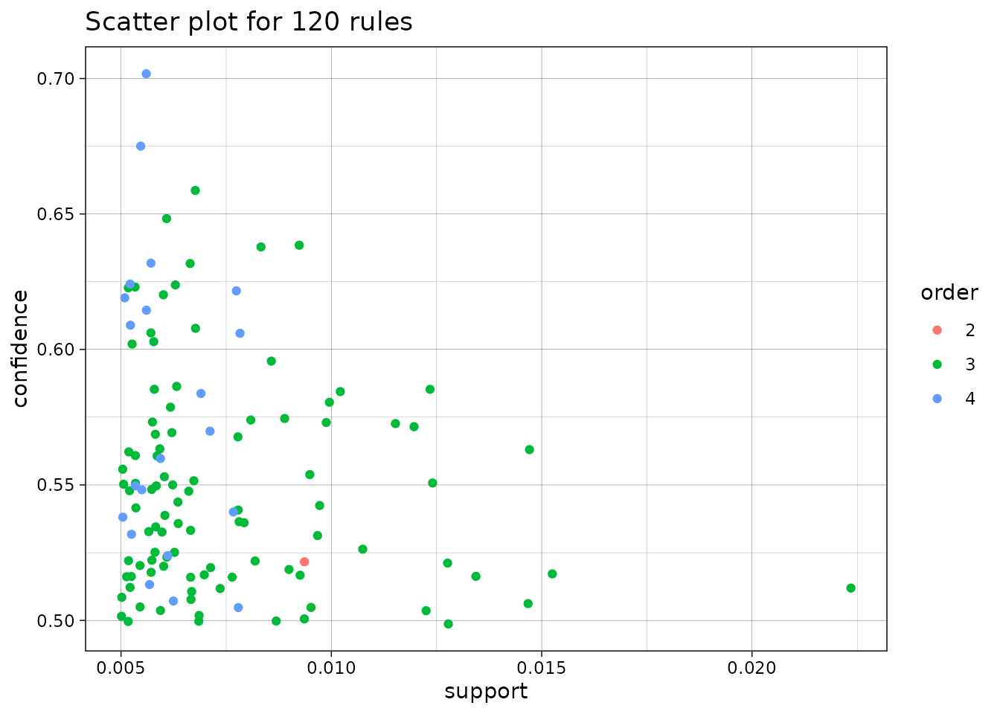
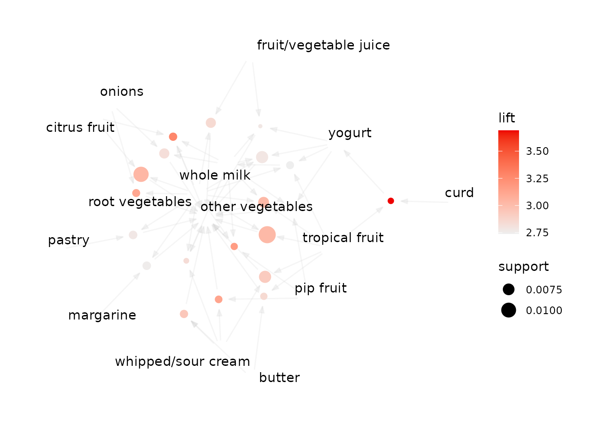
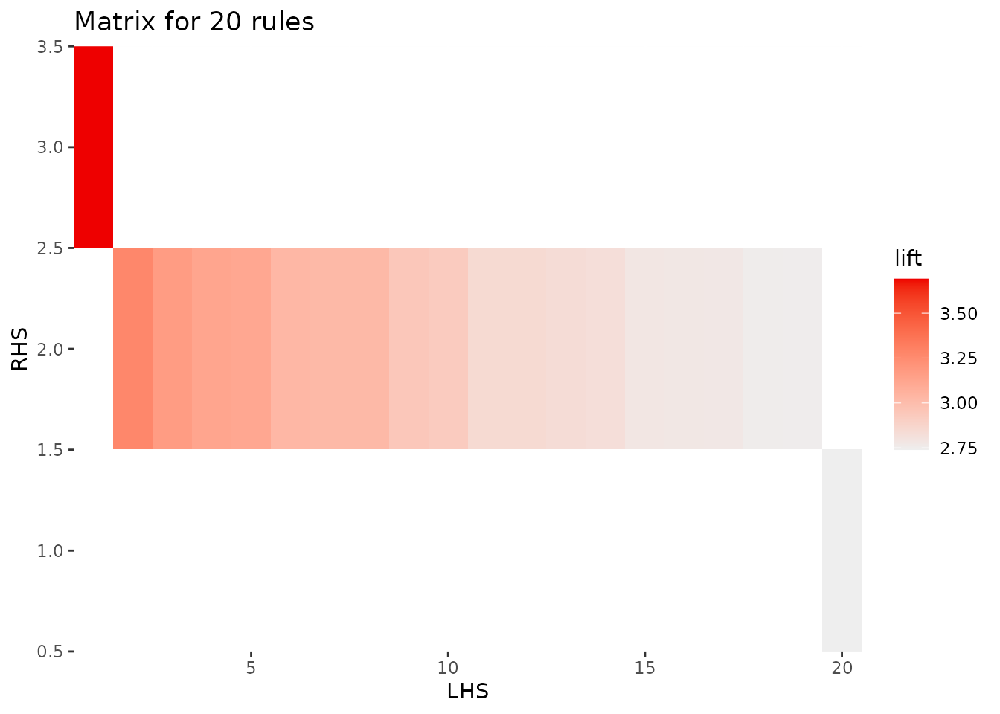
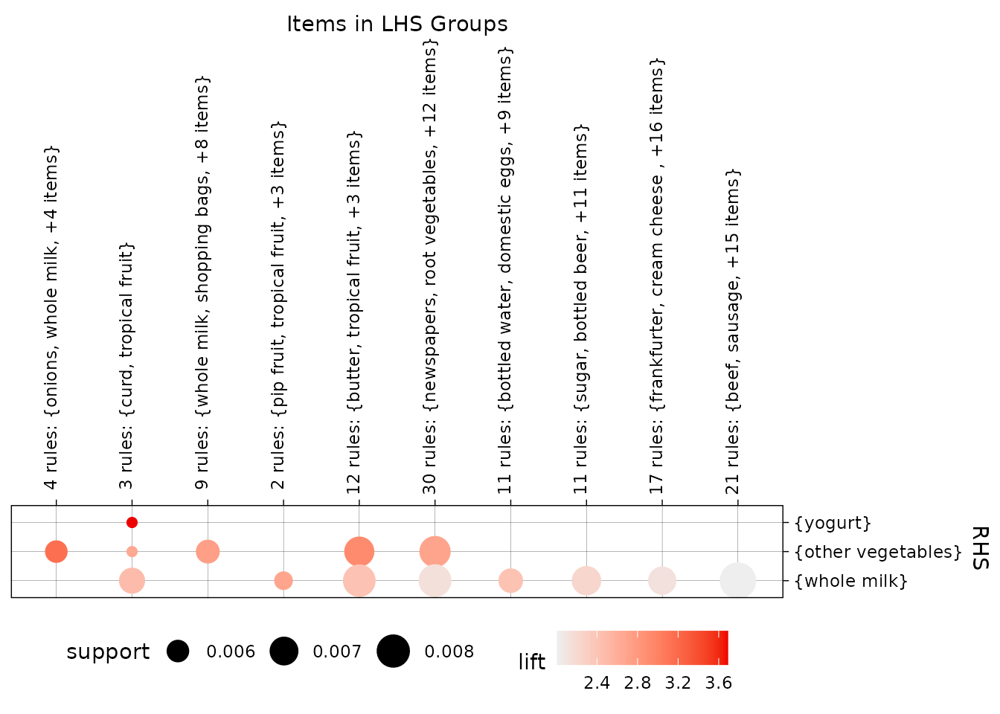
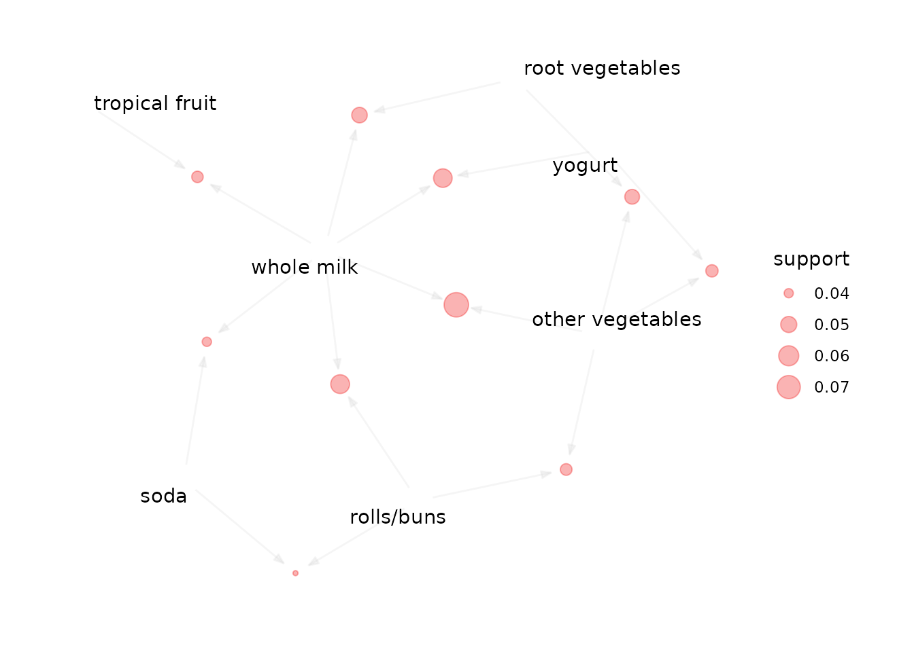

arulesViz adds static and interactive visualizations for
association rules and frequent itemsets created with arules.
This vignette shows a typical first workflow: mine a set of rules, look
at its overall structure, select an interesting subset, and inspect that
subset in more detail.
Installation
Install the released version from CRAN and load it:
install.packages("arulesViz")
library(arulesViz)Loading arulesViz also loads arules, which
provides the data structures and mining algorithms used below.
Create a set of rules
We use the Groceries transaction data included with
arules and mine rules with the Apriori algorithm. The
thresholds are deliberately restrictive so the resulting rule set is
small enough to explore comfortably.
data("Groceries")
rules <- apriori(
Groceries,
parameter = list(support = 0.005, confidence = 0.5),
control = list(verbose = FALSE)
)
rules
#> set of 120 rulesarulesViz extends the standard plot()
generic for objects of class rules and
itemsets. For rules, the default is a scatter plot of
support against confidence, with color representing lift.
Start with an overview
plot(rules)
#> To reduce overplotting, jitter is added! Use jitter = 0 to prevent jitter.
Each point is one rule. Rules toward the upper right have higher
support and confidence, while the color scale identifies rules with high
lift. Measures can be changed explicitly, and limit keeps
the most highly shaded rules when a rule set is too large to display
clearly.
plot(
rules,
measure = c("support", "lift"),
shading = "confidence",
limit = 100
)
#> To reduce overplotting, jitter is added! Use jitter = 0 to prevent jitter.
A two-key plot uses color for the rule length (also called its order).
plot(rules, method = "two-key plot")
#> To reduce overplotting, jitter is added! Use jitter = 0 to prevent jitter.
Focus on interesting rules
Most detailed visualizations work best on a selected subset. Here we sort by lift and retain 20 rules. In a real analysis, selection should also reflect the application, for example by requiring a particular item on the left- or right-hand side.
rules_top <- head(sort(rules, by = "lift"), 20)
inspect(head(rules_top, 5))
#> lhs rhs support confidence coverage lift count
#> [1] {tropical fruit,
#> curd} => {yogurt} 0.005287239 0.5148515 0.010269446 3.690645 52
#> [2] {citrus fruit,
#> root vegetables,
#> whole milk} => {other vegetables} 0.005795628 0.6333333 0.009150991 3.273165 57
#> [3] {pip fruit,
#> root vegetables,
#> whole milk} => {other vegetables} 0.005490595 0.6136364 0.008947636 3.171368 54
#> [4] {pip fruit,
#> whipped/sour cream} => {other vegetables} 0.005592272 0.6043956 0.009252669 3.123610 55
#> [5] {root vegetables,
#> onions} => {other vegetables} 0.005693950 0.6021505 0.009456024 3.112008 56A graph makes the items shared by rules easy to see. Rule vertices connect left-hand-side items to right-hand-side items.
plot(rules_top, method = "graph")
A matrix plot places antecedents in columns and consequents in rows. Color represents the selected interest measure; the default shading measure is lift.
plot(rules_top, method = "matrix")
#> Itemsets in Antecedent (LHS)
#> [1] "{tropical fruit,curd}"
#> [2] "{citrus fruit,root vegetables,whole milk}"
#> [3] "{pip fruit,root vegetables,whole milk}"
#> [4] "{pip fruit,whipped/sour cream}"
#> [5] "{root vegetables,onions}"
#> [6] "{citrus fruit,root vegetables}"
#> [7] "{tropical fruit,root vegetables,whole milk}"
#> [8] "{tropical fruit,root vegetables}"
#> [9] "{butter,whipped/sour cream}"
#> [10] "{tropical fruit,whipped/sour cream}"
#> [11] "{tropical fruit,butter}"
#> [12] "{root vegetables,fruit/vegetable juice}"
#> [13] "{root vegetables,whole milk,whipped/sour cream}"
#> [14] "{onions,whole milk}"
#> [15] "{root vegetables,whole milk,yogurt}"
#> [16] "{whole milk,yogurt,fruit/vegetable juice}"
#> [17] "{root vegetables,pastry}"
#> [18] "{root vegetables,margarine}"
#> [19] "{pip fruit,whole milk,yogurt}"
#> [20] "{tropical fruit,root vegetables,yogurt}"
#> Itemsets in Consequent (RHS)
#> [1] "{whole milk}" "{other vegetables}" "{yogurt}"
For larger rule sets, the grouped matrix view clusters similar
antecedents. The k argument controls the number of
groups.
plot(rules, method = "grouped matrix", k = 10)
Other available methods include parallel coordinates
("paracoord") and, for a single rule together with its
original transactions, mosaic and double decker plots. Use the built-in
help interface to discover the methods, rendering engines, and
method-specific controls:
Interactive exploration
Several visualization methods can produce HTML widgets. Hovering over points in this scatter plot reveals the corresponding rule and its quality measures.
plot(rules, engine = "htmlwidget")inspectDT() creates a searchable and sortable table,
while ruleExplorer() starts a Shiny application that
combines filtering, tables, and plots.
inspectDT(rules)
ruleExplorer(rules)HTML widgets can become slow with very large rule sets. Select rules
first or use limit before creating an interactive
visualization.
Visualize frequent itemsets
The same interface also supports frequent itemsets. For example, mine
itemsets with eclat() and display the ten most frequent
itemsets as a graph:
itemsets <- eclat(
Groceries,
parameter = list(support = 0.02, minlen = 2),
control = list(verbose = FALSE)
)
plot(itemsets, method = "graph", limit = 10)
For a complete description of all visualization methods and their
arguments, see ?arulesViz::plot. The package documentation
for inspectDT() and ruleExplorer() covers the
interactive tools in more detail.